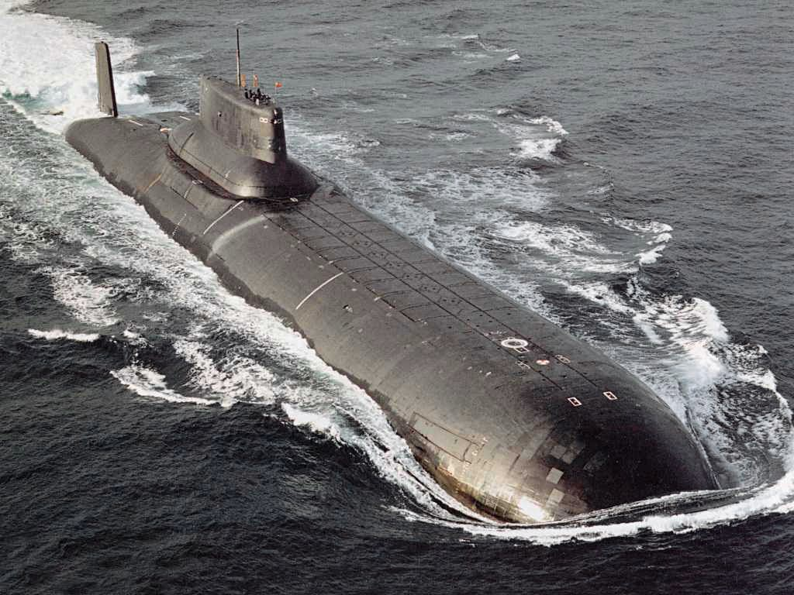

Civil Vízalatti
Történet
-
Hosszas kísérletezések, tervezések után a 19. század végére megszületett egy vadonatúj fegyvernem, a tengeralattjáró. Ezzel a tengeri hadviselésben a felszínről fokozatosan a felszín alá is kiterjedt a küzdelem. 1890–1900 között a tengeralattjárók két fő csoportját alakították ki: a tengeralattjáró naszádot amelyet célpontvédelmi és kikötővédelmi feladatokra alkalmaztak és csak rövid utakra használhattak, valamint a tengerbe merülő hajót amely már külső hajótesttel is rendelkezett és hosszú óceáni utakra is alkalmas volt. Ez utóbbi a felszínen hajózott és csak a támadás idejére merült le.
-
Ekkor még 100–300 tonnás hajók épültek, merülési mélységük 40 m körül mozgott, meghajtásukat gőzgép, vagy más vegyes tüzelésű erőgép biztosította. 1914-re kialakult az egységes tengeralattjáró-naszád fogalma (Unterseeboote, vagy Uboot). A tengeralattjárókat a felszínen petróleum- vagy benzinmotorok hajtották, a víz alatt pedig akkumulátorokról táplált elektromos motorok. Legfontosabb fegyvere a 450 mm-es torpedó lett, ágyút csak ritkán, és akkor is csak kiegészítő fegyverzetként vittek magukkal. Az első világháború folyamán a tengeralattjárók súlyos veszteségeket okoztak, elsősorban a kereskedelmi hajózásban. 1917–1939 között új torpedókat kísérleteztek ki, de a technikai nehézségeken csak részben tudtak úrrá lenni. A tengeralattjárók építésében elterjedt a hegesztési technológia. Eltűntek a szögletes formák és lépcsőzetes tornyok. Visszatértek a konzervatív szemlélethez és a tengeralattjárót csak sokoldalú kisegítő szerepkör betöltésére tartották alkalmasnak, aminek sok altípusát alakítottak ki, anélkül, hogy bármelyikkel átütő sikert értek volna el.
-
A fejlesztések során kialakították a repülőgép-hordozó, a deszantszállító, a partvédelmi, a nyílt tengeri, a víz alatti cirkáló és a szállító típusú tengeralattjárókat. Az 1930-as években az ívhegesztés lehetővé tette a hengeres nyomásálló testtől való eltérést, növekedhetett a szilárdság és a teljesítmény. Az 1940-es évek elején megjelent az ellipszis keresztmetszetű test, majd az osztott és 2 ellipszoid szekrényes test. 1944 tavaszára a Schnorchel-levegőcső megoldotta a víz alatti hajózást a főmotorokkal 5–6 m mélységig.
-
A legjelentősebb minőségi változás 1945–1954 között zajlott le. Kevesebb tengeralattjáró készült, de növekedtek a méretek. Újra többféle különleges típus jelent meg. Helikoptert, mini tengeralattjárót, partraszálló csónakokat, rakétákat, robotrepülőgépeket helyeztek el a fedélzeti hangárban. Alkalmaztak vízvédett lövegeket, majd később teljesen elhagyták ezeket. Készültek üzemanyag-szállító, aknatelepítő, rádió- és lokátor-relé, ellátó, anyagraktáros és javító tengeralattjárók, vízkiszorításuk az 1945-ös 1200 t-ról 2300 t-ra növekedett. A Szovjetunió hatalmas dízel-elektromos tengeralattjáró-flottát kezdett el kiépíteni, amely a flottája gerincét képezte. 1954-től megjelent a nukleáris meghajtás, amelyre először az Egyesült Államok kezdett el fokozatosan átállni (és mára már nincs is hagyományos meghajtású tengeralattjárója). A vízkiszorítás az 1950-es években már elérte 3300 tonnát. A fejlődés újabb állomása volt az áramvonalas csepp-forma megjelenése 1959-től, amikor már a víz alatti haladás gyorsabb lett, mint a felszíni. A méretnövekedés tovább folytatódik. Alapvetően háromféle nukleáris meghajtású típusa készül a flottáknak.
Típusai
| Vadász-tengeralattjáró | Hadászati ballisztikusrakéta-hordozó tengeralattjárók | Harcászati robotrepülőgép-hordozó tengeralattjárók | Különleges tengeralattjárók |
Vadász-tengeralattjáró
Az 1950-es években a katonai szakértők úgy vélték, hogy lejárt a dízel-elektromos tengeralattjárók kora. Még a kisebb államok haditengerészete is az atommeghajtású tengeralattjárók rendszeresítése mellett döntött, de idővel belátták, hogy túl drága a beszerzése és az üzemeltetése. Mára sokkal kiforrottabb és kifinomultabb formában még mindig rendszerben maradtak a hagyományos vadász-tengeralattjárók is. Az USA haditengerészetén kívül minden tengeralattjárókkal rendelkező tengerészetnél üzemel, kizárólagosan, vagy vegyesen a nukleáris meghajtásúakkal. A hagyományos tengeralattjáróknak három fő változata van jelenleg, plusz a nukleáris meghajtású vadász-tengeralattjárók
Hadászati ballisztikusrakéta-hordozó tengeralattjárók
1955-ben a Szovjetunió a hagyományos meghajtású Zulu osztályú tengeralattjárót átalakította: a torony hátsó részébe két indítócsövet helyeztek el, ezzel megkezdődött a ballisztikus rakéta-hordozó tengeralattjárók építése. Mára már valamennyi ilyen típusú tengeralattjáró kizárólag nukleáris meghajtású. Fedélzetükön 16–20–24 db rakétát hordoznak, mindegyik rakéta akár több nukleáris töltetet képes célba juttatni, töltetenként különböző városokra, ez a nyilvánvaló erőkoncentráció hatalmas fenyegetést jelent. A tengeralattjárók a víz alól indíthatják rakétáikat, felderítésük és ellenőrzésük igen nehéz, ezért a szinte tökéletes fegyverrendszer megvalósulásai. Jelenleg (2007-ig) az USA, Izrael, Oroszország, Nagy-Britannia, Franciaország és Kína üzemeltet ilyen típusú tengeralattjárókat. Vízkiszorításuk: 2 850-25 000 t (alámerülve).
Hadászati ballisztikusrakéta-hordozó tengeralattjárók

Néha nevezik tengerészeti hadműveleti rakétahordozó-tengeralattjárónak, vagy szárnyasrakéta-hordozó tengeralattjárónak is, de mindkettő helytelen. Ugyanis a robotrepülőgépek, amiket hordoznak és be is vethetnek, gázturbinával működnek, míg a rakéta magával viszi a tüzelőanyagát és a környező levegőtől függetlenül működik.
A robotrepülőgépek és az ezeket hordozó tengeralattjárók fejlesztése 35 évre nyúlik vissza. Az amerikaiak az 1950-es években készítettek néhány kifejezetten erre a célra szolgáló tengeralattjárót a saját fejlesztésű Regulus I, majd a Regulus II jelzésű robotrepülőgépek kiszolgálására, de a programot törölték. 1974-ben újra elővették az ötletet, de már a fejlettebb Tomahawk rendszerrel. Ezt a Los Angeles osztályú vadász-tengeralattjáróra telepítették és a szabványos 533 mm-es torpedóvetőből konténerrel együtt indíthatták. A korszerűsített Los Angeles osztály újabb egységeinél már a külső ballaszttartályokba építettek külön indítóállásokat, hogy ne a torpedók rovására kelljen szállítani a robotrepülőgépeket. Ezzel a megoldással kiküszöbölték egy külön osztály építésének költségét és egy többcélú és nagyon hatásos osztályhoz és rendszerhez jutottak. Az oroszok teljesen más úton indultak el. Az eleinte igen testes és nagyméretű robotrepülőgépeiket külön erre a célra tervezett dízel-elektromos tengeralattjárókra telepítették, hasonlóan, mint a ballisztikus rakétákat. A kezdetben csak a felszínről indítható robotrepülőgépeket mára már a felszín alól biztonságosan indítható változatokra cserélték és a hordozó tengeralattjárók is igen sokat fejlődtek, mára már nukleáris meghajtásúak. Az oroszoknál ezen tengeralattjárók legfőbb célpontjai a repülőgép-hordozó kötelékek – bármi áron el kellett volna süllyeszteni a hordozókat és a kíséretüket pusztítani. Vízkiszorításuk 3000–14 000 t.
Különleges tengeralattjárók
Igen sokféle különleges tengeralattjárót lehetne megemlíteni, de különösen két típus van, ami külön szót érdemel. Általában ezeket a tengeralattjárókat kiöregedő vadász-, vagy rakétahordozó-tengeralattjárókból alakítják át. Az első a DSRV (Deep Submergence Recovery Vessel/angol) és a hordozó tengeralattjárója. A hordozó tengeralattjáró az amerikaiaknál és az oroszoknál is átalakított vadász-tengeralattjáró. A DSRV mély merülésű mentő-tengeralattjáró feladata a sérült tengeralattjáróhoz jutni, rácsatlakozni, és a személyzetet kimenteni. Az amerikaiak DSRV-je egy merüléssel 24 főt tud kimenteni és bármilyen menekülő kijáratra rá tud csatlakozni. Az oroszok is készítettek ilyen eszközt, de üzemeltetési problémái lehetnek, mivel a Kurszk katasztrófájánál meg sem próbálták bevetni. Ilyen eszközöknek igen nagy nyomást kell kibírni, nagyobbat, mint a menteni kívánt tengeralattjárók szolgálati merülése, különleges kialakításúak és igen drága a fenntartási és előállítási költségük. A második az SDV (Swimmer Delivery Vehicle/angol) és hordozó tengeralattjárója, ami általában szintén kivonás előtt álló átalakított tengeralattjáró, főként ballisztikus rakétahordozó. Az SDV úszókat célba juttató törpe-tengeralattjáró Kisméretű, amelyet a hordozó tengeralattjáró a célkörzetbe szállít. Az SDV-t felderítő és szabotőr kommandó partközelbe juttatására használják, a kommandósok az utolsó szakaszt úszva teszik meg. Észak-Korea használ nagy mennyiségben ilyen törpe-tengeralattjárókat déli szomszédja ellen, többnyire sikertelenül.